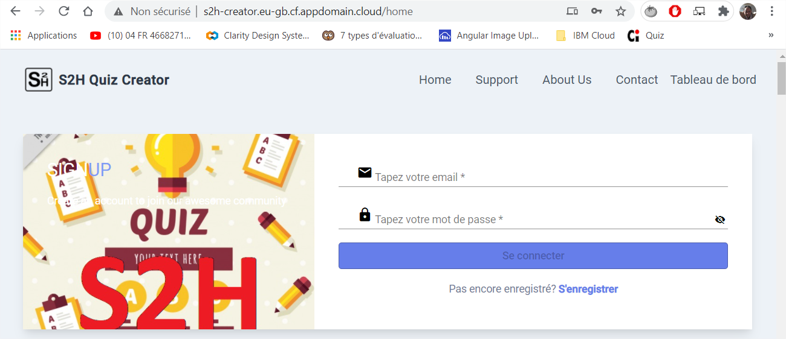
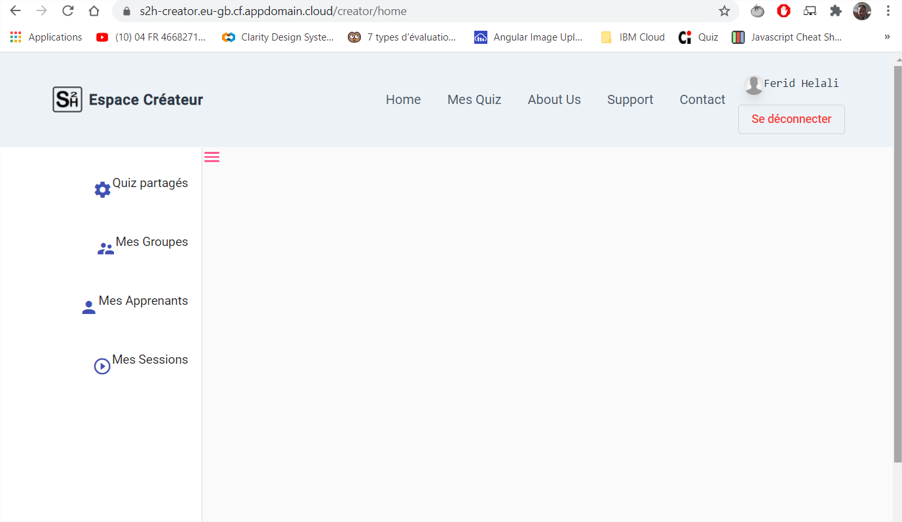
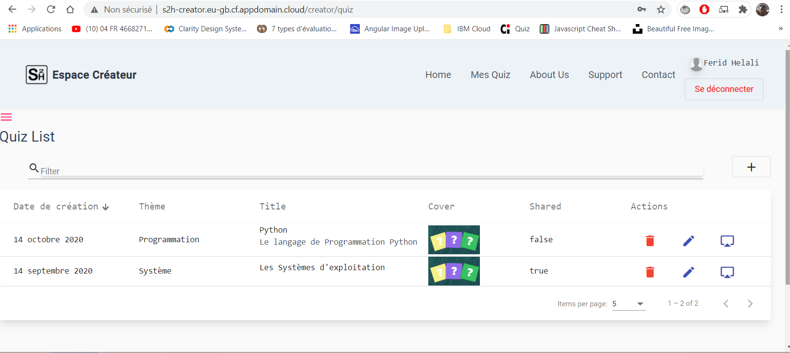
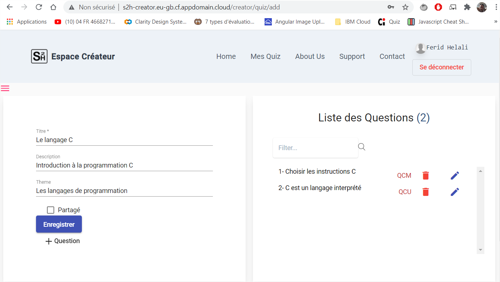
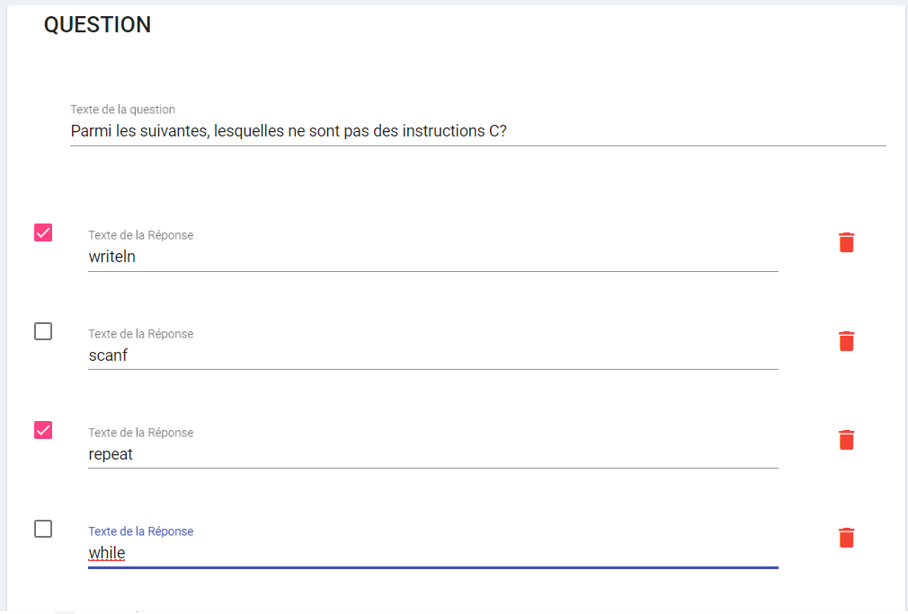
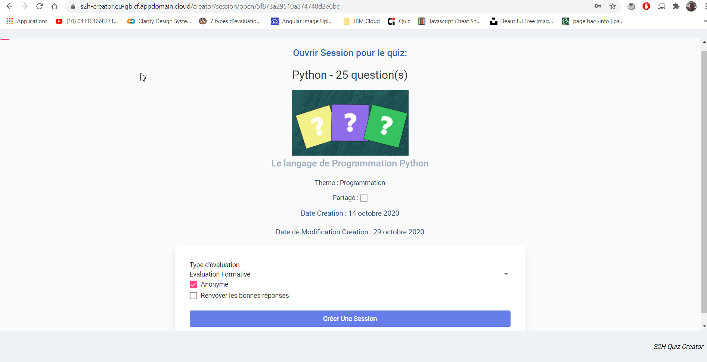
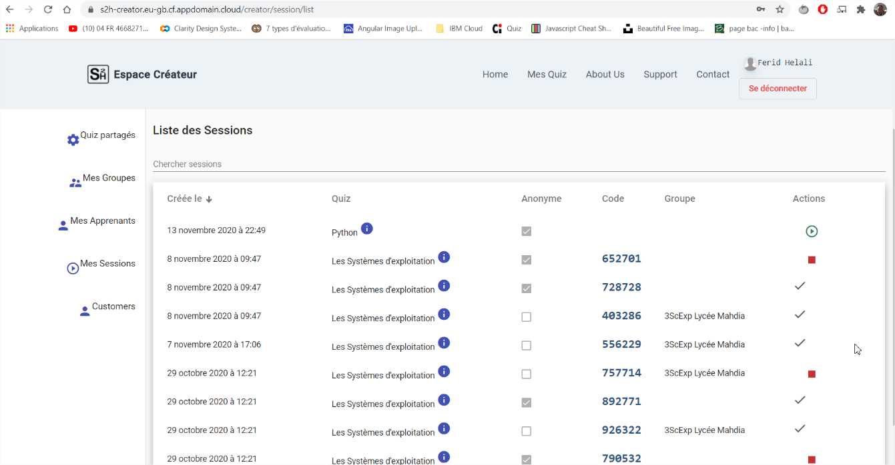

S2H Creator
L’application S2H Creator permettant à un enseignant de créer ses Quiz, de gérer ses groupes d’apprenant, de gérer ses sessions de Quiz ainsi que de consulter les résultats des tests des apprenant est disponible sur l’URL https://s2h-creator.eu-gb.cf.appdomain.cloud
Dans la suite de cette partie je vais décrire quelques-uns des interfaces utilisateur.
Page de démarrage (Land Page)
chaque fois qu’un internaute tente d’accéder à l’application et qu’il ne s’est pas authentifié dans une session précédente, il tombera sur la page Login lui permettant de se connecter à son espace de travail.
Dans le cas où l’internaute ne dispose déjà pas de compte, il pourra s’enregistrer.

Page d’accueil du Créateur
Une fois authentifié, l’utilisateur aura accès à son espace de travail formé essentiellement par deux barres de navigation dont l’une est rétractable et permettant d’accéder aux différentes fonctionnalités de l’application

Liste des Quiz
En accédant au lien « Mes Quiz », l’utilisateur est redirigé vers la page représentant la liste des quiz et un bouton permettant d’ajouter un nouveau Quiz.
Chaque ligne du tableau contiendra les informations d’un quiz et un ensemble d’actions que l’utilisateur pourra entreprendre (Supprimer le Quiz, Modifier le Quiz ou créer une session basée sur le Quiz).

Création de Quiz
En choisissant d’ajouter un nouveau Quiz, l’utilisateur tombera sur la page suivante :

A gauche un formulaire permettant de saisir les informations d’un Quiz.
A droite une liste représentant la liste des questions constituant le Quiz.
En ajoutant une nouvelle question, un formulaire s’affichera en bas de la page permettant de saisir les informations d’une question.
Le formulaire permet la saisie du texte de la question ainsi que les réponses. Dans le cas d’une QCM par exemple, l’utilisateur devra saisir toutes les réponses proposées et d’indiquer celles qui sont bonnes.

Créer une Session
A partir de la liste des Quiz, et si l’utilisateur choisi de démarrer une session basée sur un Quiz, il sera redirigé vers la page de création de session.

Après avoir créé la session, l’utilisateur sera automatiquement redirigé vers la liste de ses sessions.
Liste des sessions

Cette interface comprend la liste des sessions que l’utilisateur a créées. Chacune passe par 3 états :
- créée : C’est une session en instance attendant qu’elle soit démarrée en cliquant sur le bouton « ».
- démarrée : C’est une session qui a été démarrée et qui attend qu’elle soit clôturée en cliquant sur le bouton « ».
- Clôturée : C’est une session qui a été clôturée et est marquée par la marque « » et il n’y aura plus d’actions à entreprendre pour cette session.
Lors du passage de la session de l’état créée à l’état démarrée, un code aléatoire est généré automatiquement afin d’être communiqué aux apprenants pour qu’ils puissent s’y connecter.